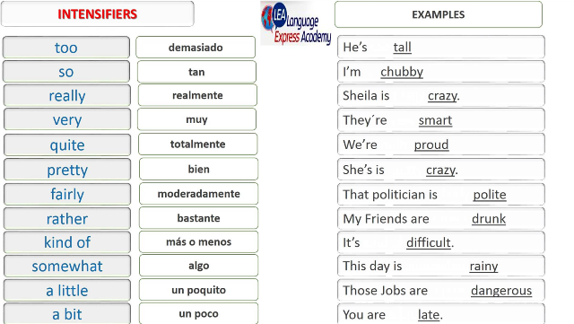

Los intensificadores son adverbios o frases adverbiales que fortalecen el significado
de otras expresiones y muestran énfasis.
Un intensificador se utiliza para dar énfasis al significado de las palabras que le siguen.
Cambian la fuerza (o graduación) de la palabra o del adjetivo.
Los intensificadores más frecuentes son very, quite, too, so y such.
Las palabras que usamos comúnmente como
intensificadores incluyen: absolutely, completely, extremely, highly, rather, really,
so, too, totally, utterly, very and at all.
Ejemplos:
1° The chocolate ice-cream is sweet-The chocolate ice-cream is very sweet.
(El helado de chocolate es dulce - El helado de chocolate es muy dulce)
2°Alice is pretty. Alice is so pretty.
(Alice es guapa. Alice es muy guapa)
1. Very
Very se utiliza delante de la mayor parte de los adjetivos y de los adverbios y delante de few y little.
Ejemplos:
°She is a very beautiful girl (Ella es una chica muy bonita)
°They dance very well (Ellos bailan muy bien)
°There is very little sugar in my tea (Hay poco azúcar en mi té)
°There are very few people at the party (Hay muy poca gente en la fiesta).
Very no puede usarse ante adjetivos o adverbios comparativos. En este caso se debe usar much.
2. Quite
Quite tiene dos significados dependiendo del adjetivo que lleve detrás. Si el adjetivo tiene grados,
es decir que describe una cualidad con distinta graduación (bueno, mejor) entonces significa bastante.
Ejemplo:
° The chocolate cake is quite good (but the cheesecake is very good
- The chocolate cake is not as good as the cheesecake)
[El pastel de chocolate es bastante bueno (pero el pastel de queso es muy bueno.
El pastel de chocolate no es tan bueno como el de queso)]
Con adjetivos que no tienen grados , quite significa completamente.
Ejemplo:
°The fish is quite dead (El pez está completamente muerto)
Quite puede ir delante de un adjetivo + nombre. Si el nombre es singular y va precedido de un artículo,
quite se coloca delante del artículo.
Ejemplo:
°She makes quite a good cake (Ella hace un pastel bastante bueno)
°She writes quite interesting stories (Ella escribe historias bastante interesantes)
Quite puede ir delante de a few, a little, y a lot of.
Ejemplos:
°He has quite a lot of friends (El tiene muchos amigos)
°There are quite a few people here (Hay poca gente aquí)
3. Too
Too va delante de un adjetivo o adverbio. Suele tener el sentido de "más que suficiente" o "más de lo necesario".
Ejemplos:
°The food is too salty (La comida está demasiado salada)
°She walks too fast (Ella camina demasiado rápido)
°I am too tired to watch television (Estoy demasiado cansado para ver la televisión)
°It is too cold for us to swim (Hace demasiado frío como para que nademos)
Too puede ir delante también de much, many, few y little.
Ejemplo:
° We have too much work (Tenemos demasiado trabajo).
Much puede utilizarse delante de too para darle mayor énfasis antes de un adjetivo o un adverbio.
Ejemplos:
·The soup is much too hot (La sopa está demasiado caliente)
· He works much too slowly (El trabaja demasiado lento)
4. So
So se usa ante adjetivos que no van seguidos por nombres. Se usa también ante adverbios y ante much o many que sí pueden ir seguidos de nombres.
Ejemplos:
·Sheila is so pretty (Sheila es muy guapa)
·Dan eats so fast (Dan come muy rápido)
·I love him so much (Lo amo mucho)
·There are so many exercises in this book (Hay muchos ejercicios en este libro)
5. Such
Such se usa ante un nombre o ante un nombre + adjetivo. Cuando el nombre es singular y va precedido por un artículo , such se coloca delante del artículo. Por ejemplo:
·Larry is such a fool (Larry es muy tonto)
· That was such an interesting movie (Esa fue una película muy interesante)
· They are such polite children (Son unos niños muy educados)
